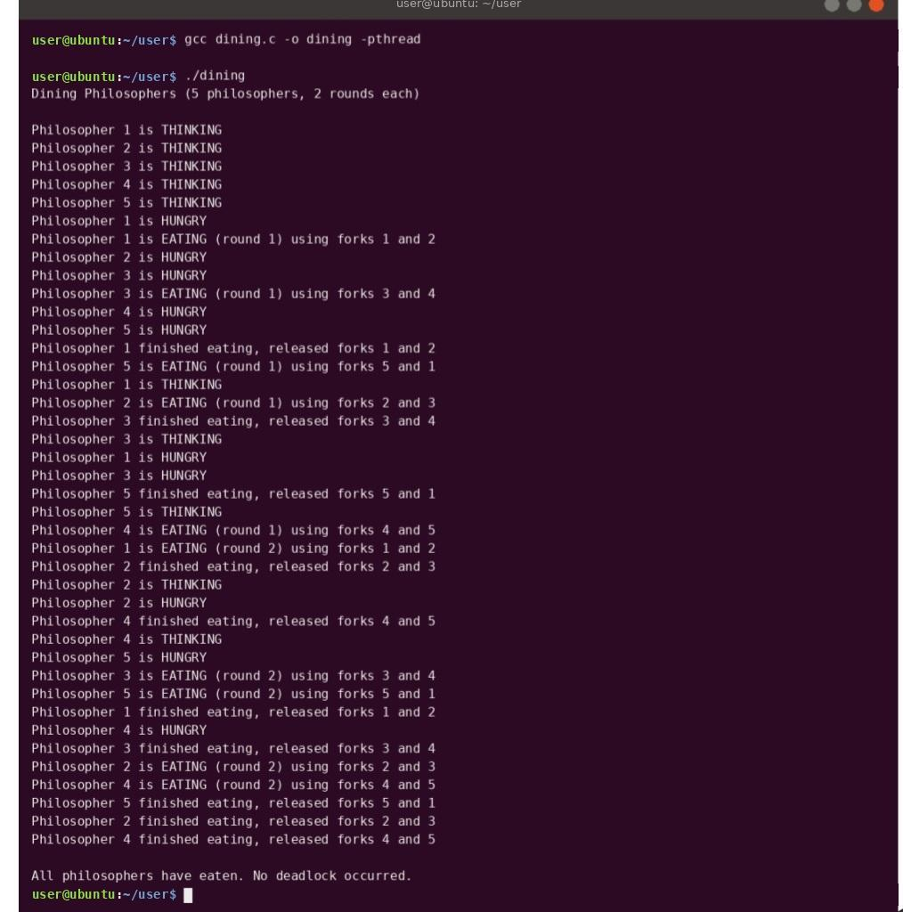

Practical 4
Dining Philosophers Problem using Semaphores
Theory
The Dining Philosophers problem models how several processes share limited resources without deadlock. Five philosophers sit around a table with one fork between each pair of neighbours. To eat, a philosopher needs both the left and the right fork.
Key concepts
- Deadlock – a situation where processes wait for each other forever. If every philosopher picks up the left fork at the same time, nobody can get the right fork and all wait indefinitely.
- Conditions for deadlock – mutual exclusion, hold and wait, no pre-emption, and circular wait. Breaking any one of them prevents deadlock.
- Starvation – a process never gets the resource it needs, even though the system is not deadlocked.
- Semaphore – a synchronisation variable with
sem_wait()(acquire) andsem_post()(release). A semaphore initialised to 1 works as a lock.
Solution used in this program
- One semaphore per fork (
fork_sem[i], initial value 1) so a fork is used by only one philosopher at a time. - An extra counting semaphore
roomwith initial valueN - 1(4). Only four philosophers may try to pick up forks at once. - Because at most 4 of the 5 philosophers compete, at least one can always get both forks, so the circular wait is broken and deadlock cannot happen.
Philosopher cycle
THINKING → HUNGRY → sem_wait(room) → pick up left and right forks → EATING → put down both forks → sem_post(room). Each philosopher repeats this for ROUNDS (2) rounds. Each philosopher runs as a separate pthread.
Code
/* Practical 4 : Deadlock-free Dining Philosophers using semaphores */
#include <stdio.h>
#include <pthread.h>
#include <semaphore.h>
#include <unistd.h>
#define N 5
#define ROUNDS 2
sem_t fork_sem[N]; /* one semaphore per fork */
sem_t room; /* at most N-1 philosophers may try to eat -> no deadlock */
void *philosopher(void *arg) {
int id = *(int *)arg;
int left = id, right = (id + 1) % N;
for (int r = 1; r <= ROUNDS; r++) {
printf("Philosopher %d is THINKING\n", id + 1);
usleep(200000 + id * 50000);
printf("Philosopher %d is HUNGRY\n", id + 1);
sem_wait(&room);
sem_wait(&fork_sem[left]);
sem_wait(&fork_sem[right]);
printf("Philosopher %d is EATING (round %d) using forks %d and %d\n", id + 1, r, left + 1,
right + 1);
usleep(400000);
sem_post(&fork_sem[left]);
sem_post(&fork_sem[right]);
sem_post(&room);
printf("Philosopher %d finished eating, released forks %d and %d\n", id + 1, left + 1, right + 1);
}
return NULL;
}
int main(void) {
pthread_t t[N];
int id[N];
for (int i = 0; i < N; i++) sem_init(&fork_sem[i], 0, 1);
sem_init(&room, 0, N - 1);
printf("Dining Philosophers (%d philosophers, %d rounds each)\n\n", N, ROUNDS);
for (int i = 0; i < N; i++) { id[i] = i; pthread_create(&t[i], NULL, philosopher, &id[i]); }
for (int i = 0; i < N; i++) pthread_join(t[i], NULL);
printf("\nAll philosophers have eaten. No deadlock occurred.\n");
return 0;
}
Output

Tap or click the screenshot to open it full size.